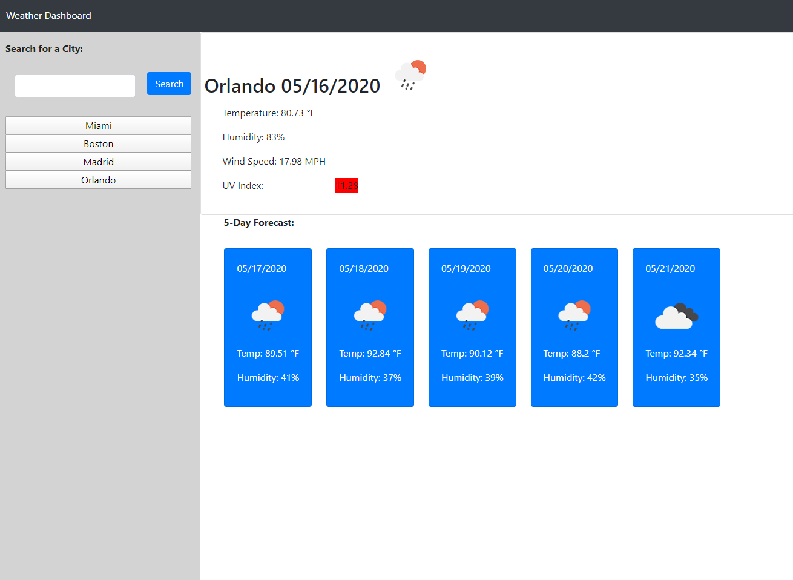
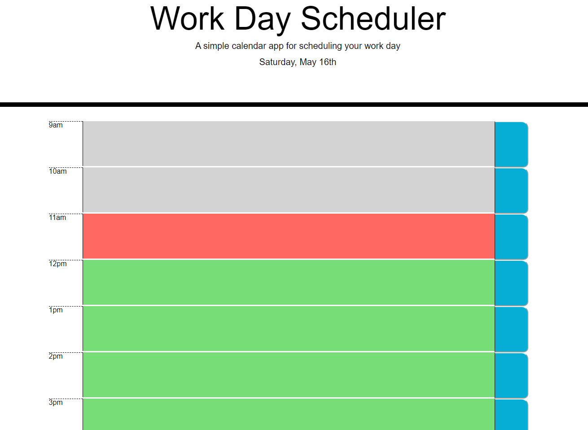
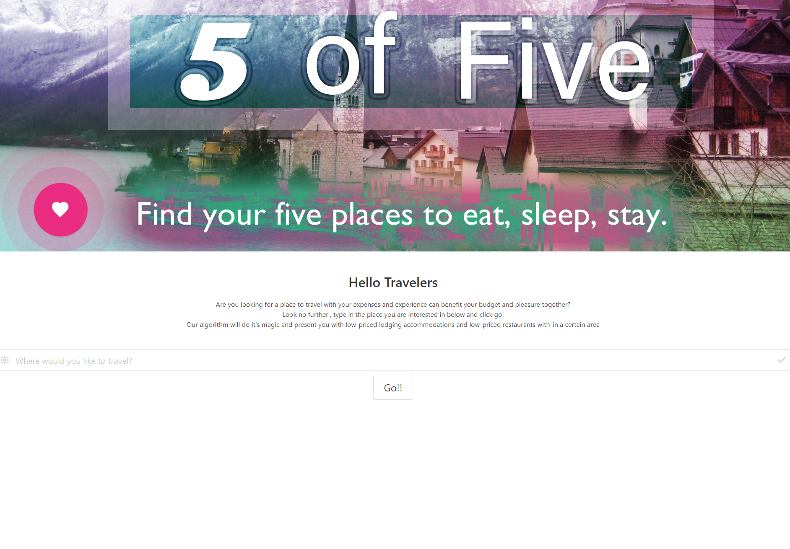

Portfolio

Weather API
Constructed a website that returns the user's search location with the current days weather, as well as the forecast of the next five days.
Check it Out

Work Day Scheduler
An agenda that where the user can track their hourly goals for the work day. Easily know whether your task is in the future, should you be currently working on that task, or if you already passed the scheduled hour for that goal.
Check it Out

Five of Five
An app that allows the user to look up the name of any city and be returned with the five cheapest hotels in that area, as well as the location presented on a map. In the future support for restaurant search will be added.
Check it Out